Step 1: Download both Github Desktop and VS Code (ignore the macOS part it should be whatever OS you use instead.)
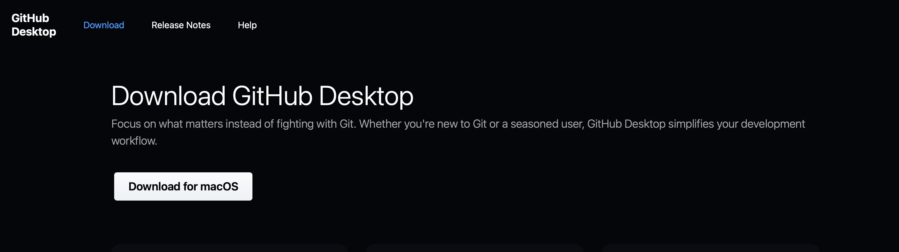 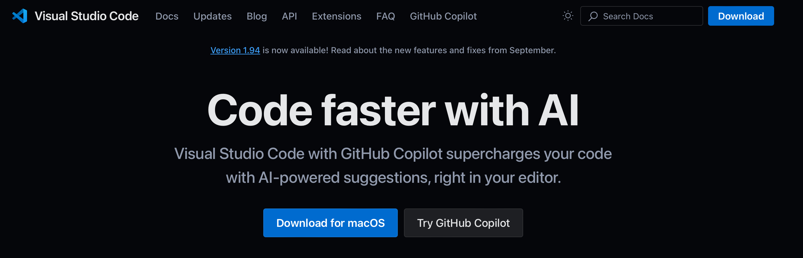
Step 2: Setup VS Code to your liking and Log into Github Desktop
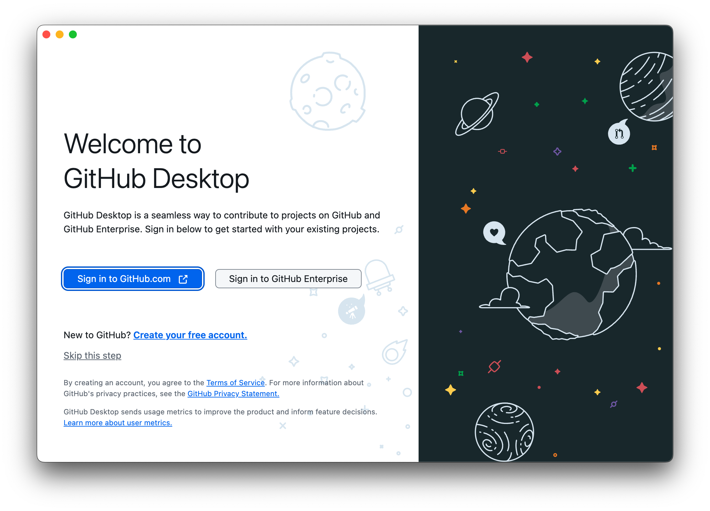
Step 3: Once that's done, Github will prompt you to configure git. Just hit Finish as those are the options you want.
(Should be your username and school email)
Step 4: You'll see a screen prompting you if you want to clone or make a new repository.
Make sure you click on "TrulyHumbleUnderGod2/WillowtownGame" and clone that repository.
When you see what the second image shows, make sure you have it saved into your documents folder.
Ignore the prompt in the example that says the folder already exists. That's just because I've already done this before.
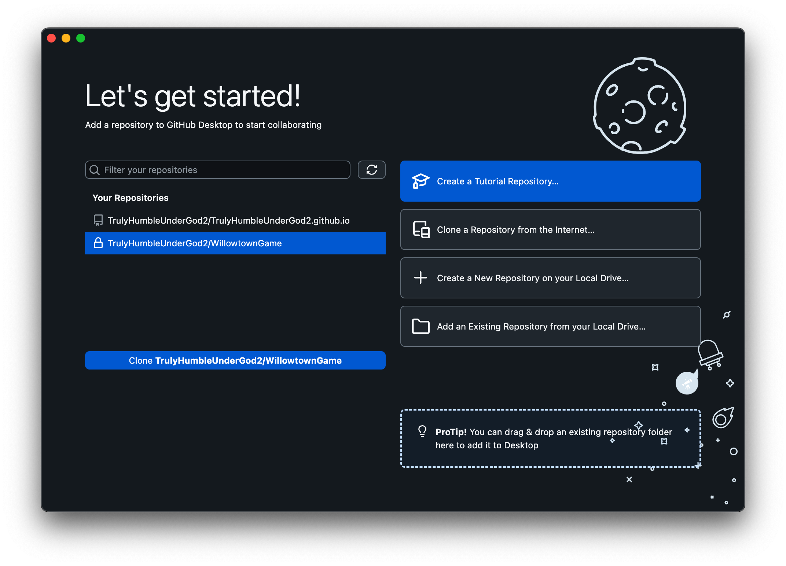 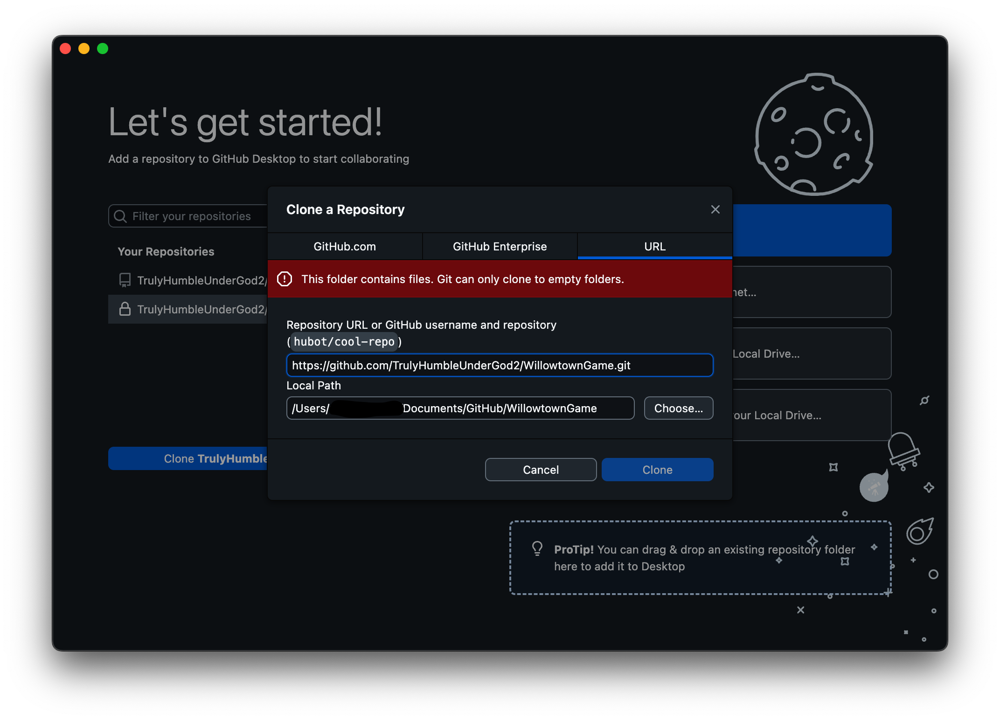
Step 5: Once you have it all cloned, you should see something that looks like this without the files in the sidebar.
If so, you're all done setting up Github.
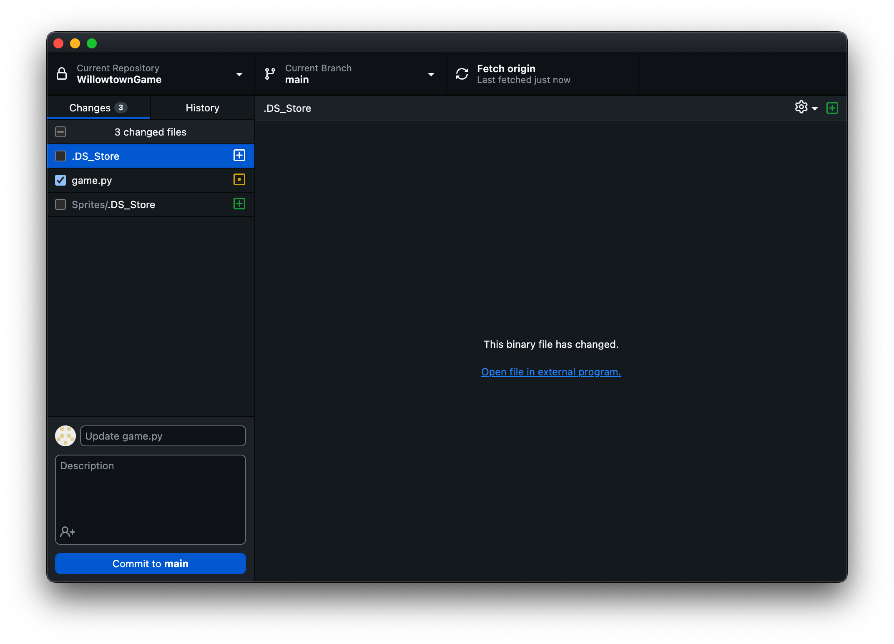
Step 6: Go back to VS Code and you should see a little icon that looks like what's pictured below.
Click on it and click on "Open Folder"
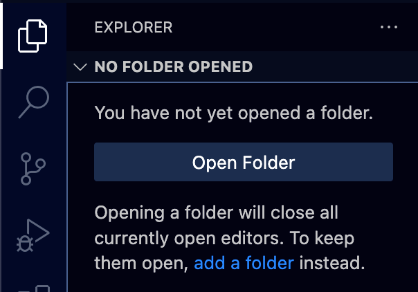
Step 7: Make sure you navigate to your Documents folder, Open the Github Folder, then the WillowtownGame folder and hit Open.
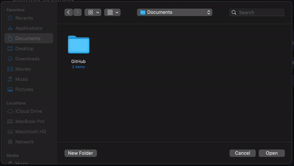
Step 8: Turn on Auto Save within the programming pane to save whatever changes you make to the file automatically.
This will ensure in the event VS Code crashes or your power goes out everything will still be there.
This also makes it easier for you to commit it to the main branch on Github
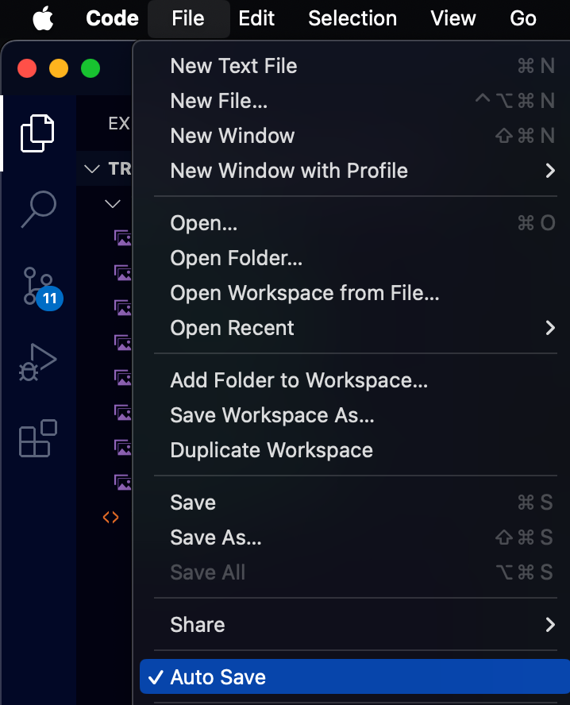
Step 9: When you're done everything and you're ready to make the commit, Open Github Desktop and it should look like it does in Step 5
with the added files in the sidebar (Ignore the .DS_Store files in the example). You don't need to change the summary or add a description but you can do so if you want to.
Once you have everything to your liking, hit "Commit to Main." After you must push it to the main branch for everyone to have access to your changes.
If that went smoothly then you're all done! you know how to use Github Desktop and VS Code.
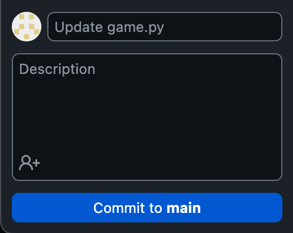
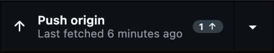
Step 11: If anyone else has made any changes and your files aren't up to date, the push option above should change to a pull option and it will either update the changed files or download the new ones.